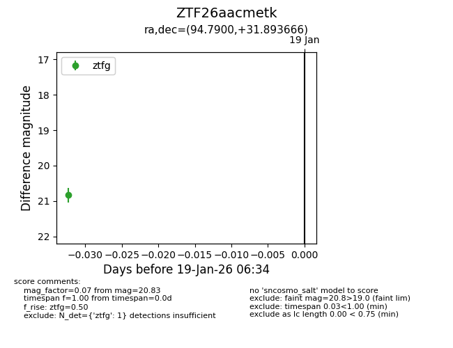
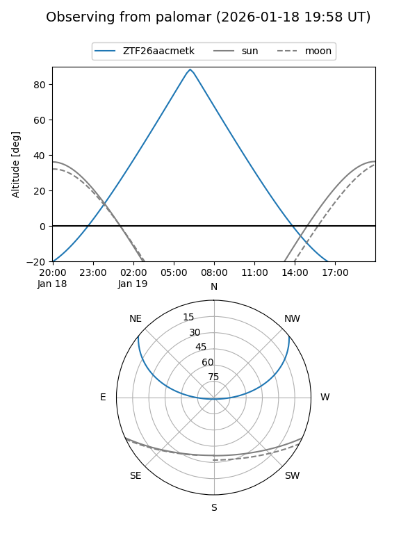

ZTF26aacmetk
Target ZTF26aacmetk at 2026-01-19 06:35
Aliases and brokers:
FINK: link
Lasair: link
ALeRCE: link
alt names
ZTF26aacmetk (ztf,fink_ztf)
Coordinates:
equatorial (ra, dec) = 94.7900,+31.89367
equatorial (HMS+DMS) = 06:19:09.59,+31:53:37.20
galactic (l, b) = (180.9670,+7.74971)
Flags:
Photometry:
last ztfg=20.83
1 ztfg detections
Lightcurve

Visibility


Additional plots